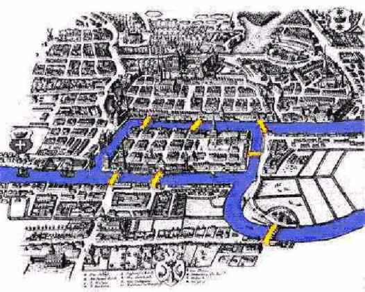
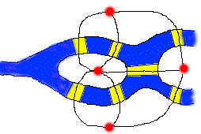

prezentas la situon de la 7 Konigsbergaj pontoj en la 18a jc. Oni dezirus pasi per ĉiu ponto po unufoje kaj reveni en la startopunkton.
Ĉar gravas nur la pontotransiroj, la urboplano estas reduktebla al grafeo, kies eĝoj respondas al la pontoj, kaj la verticoj, al la disaj urbopartoj.

Oni povas konstati, ke en tiu grafeo ne ekzistas simplaj cikloj entenantaj ĉiujn eĝojn.
Eŭlero ĝeneraligis la grafean problemon: en kiuj okazoj finia grafeo entenas tian ciklon (ĉenon), ke ĉiu ĝia eĝo aperas en la ciklo ĝuste po unu fojo? Tia ciklo, se ĝi ekzistas, estas nomata Eŭlera ĉeno, kaj la grafeo en kiu estas tia ciklo, Eŭlera grafeo. La respondo estas jena:
Finia grafeo G estas Eŭlera SSE